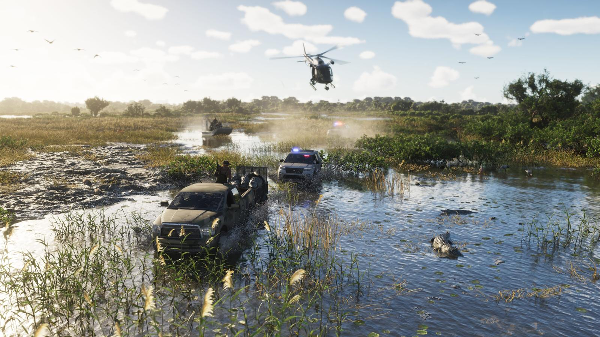
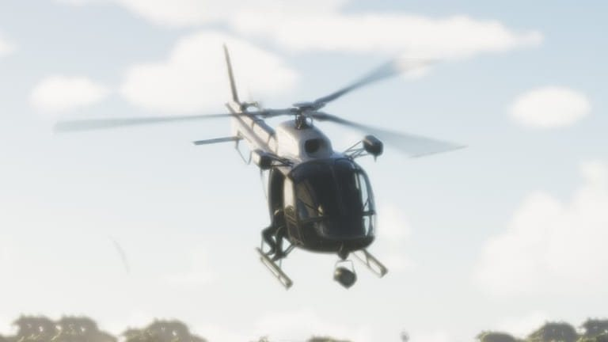
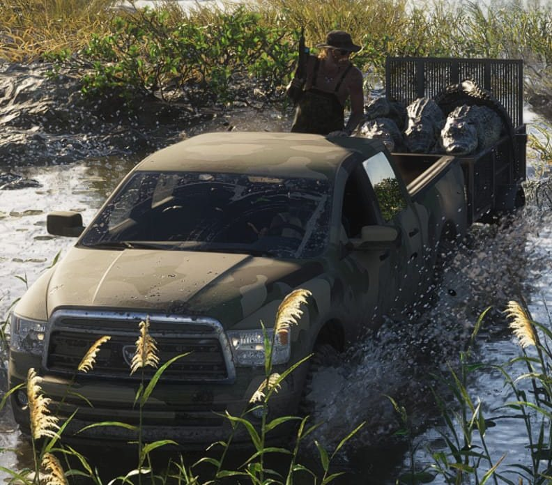
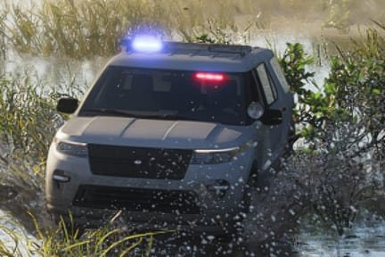
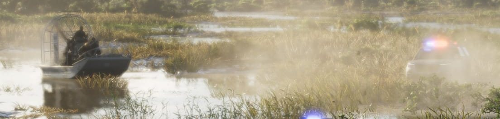
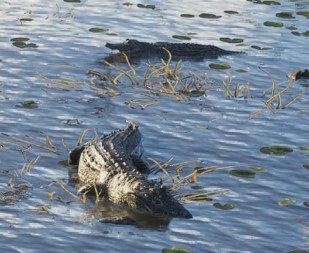
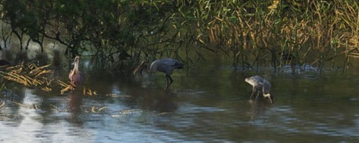
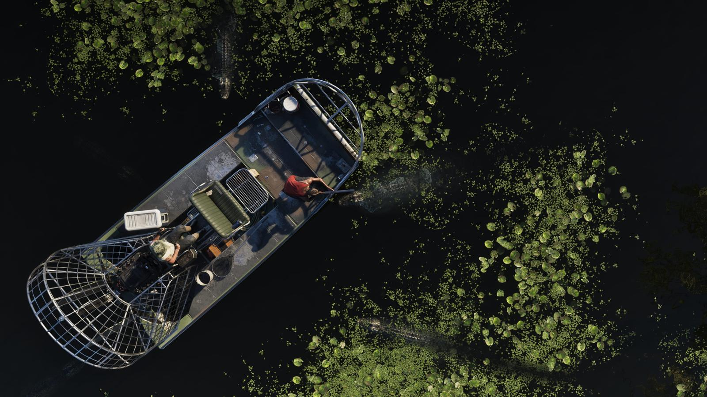

Разбор кадра: погоня на болотах Grassrivers
Обновлено:

- Официальный кадр Rockstar из региона Grassrivers — болота Леониды.
- В кадре целая история: пикап с аллигаторами в прицепе уходит от полиции.
- Погоня идёт по воде, по траве и с воздуха.
- Природа живёт своей жизнью: аллигаторы и птицы рядом с перестрелкой.
Сцена
Вода по самые фары. Камуфляжный пикап ревёт, колёса вязнут в иле, а за спиной в прицепе глухо перекатывается груз, за который здесь можно надолго сесть. Над головой рубит воздух вертолёт, сзади мигает синим. Впереди — только камыш, протоки и аллигаторы, которым всё равно, кто победит.
Это не сцена из трейлера, а один из официальных скриншотов региона Grassrivers. Rockstar не подписала, что на нём происходит, но кадр рассказывает историю сам. Разберём его на шесть деталей — и заодно поймём, какой будет игра за пределами неоновых улиц Вайс-Сити.
Кадр целиком
Нажмите на номер, чтобы перейти к увеличенному фрагменту.
6 деталей

1 Вертолёт над болотом
Вертолёт идёт низко, почти над камышом. Если присмотреться, в открытой боковой двери сидит человек — ноги стоят прямо на полозьях, как у стрелка или наблюдателя. Под носом машины — шар камеры или прожектора. Это значит, что погоня идёт и с воздуха: уйти от неё, просто нырнув в заросли, не получится. Помните, что в GTA 6 полицию больше не видно на мини-карте? Здесь её не нужно искать на радаре — достаточно поднять голову. Как устроен новый розыск — Полиция в GTA 5 и GTA 6: как изменился розыск.

2 Камуфляжный пикап и «трофеи»
Главный герой кадра — пикап в камуфляжной раскраске, который прёт по воде почти по фары. В кузове стоит мужчина в рабочем комбинезоне и шляпе, винтовка поднята вверх. А за машиной — прицеп-клетка, и в нём навалены аллигаторы. Несколько туш, одна на другой. Судя по мигалкам сзади, у полиции к этим ребятам вопросы. Мы не знаем, кто здесь «плохой» — Rockstar не подписывала кадр, — но история читается и без подписи.

3 Патрульный внедорожник
Сразу за пикапом, след в след, идёт полицейский внедорожник с включёнными синими и красными огнями. Вода расходится от колёс волной, брызги летят в камыш — погоня по болоту выглядит как отдельная механика, а не как езда по асфальту, раскрашенному в зелёный.

4 Аэроглиссер и вторая машина
Дальше по протоке — аэроглиссер: плоскодонная лодка с огромным винтом в защитной клетке. На борту двое-трое. Ещё дальше, в пыльной дымке, мигает вторая патрульная машина. Аэроглиссер — главный транспорт настоящих Эверглейдс: он скользит по мелководью и прямо по траве, где обычная лодка сядет на мель. Его «клетку» видно и на других кадрах Grassrivers — похоже, это будет обычный транспорт региона.

5 Аллигаторы в воде
Пока люди гоняются друг за другом, два крупных аллигатора лежат в воде среди кувшинок. Один как будто повернул голову к погоне. Для Grassrivers это нормально: Rockstar называет регион раем для охотников и прямо предупреждает, что под водой здесь водятся опасные хищники. Животные в GTA 6 — не декорация, а часть экосистемы: Животные в GTA 6: кто живёт в Леониде.

6 Птицы на отмели
Справа, на мелководье у мангровых зарослей, спокойно кормятся птицы: розовая колпица и цапли, одна опустила клюв в воду. В небе слева — целая стая. Никто из них даже не взлетел от вертолёта. Это та самая «живая» Леонида, о которой Rockstar говорит в каждом анонсе.
В реальной Флориде охота на аллигаторов разрешена — но строго по лицензии и только в сезон, с 15 августа по 1 ноября. Всего в штате, по оценкам властей, живёт около 1,3 миллиона аллигаторов. Так что клетка с трофеями сама по себе не преступление. А вот вертолёт над головой намекает, что с бумагами у этих охотников что-то не так.
Почему «Grassrivers»
Название региона — прямая отсылка к Эверглейдс. В 1947 году журналистка Марджори Стоунман Дуглас выпустила книгу «Эверглейдс: река травы» (The Everglades: River of Grass) — и прозвище прилипло к болотам навсегда. Эверглейдс — действительно не болото в привычном смысле, а очень медленная и широкая река, которая течёт через траву. Rockstar превратила «реку травы» в Grassrivers — «травяные реки».

Что мы узнали
- Погони в GTA 6 не привязаны к дорогам: полиция идёт за тобой по воде, по траве и с воздуха.
- В Grassrivers есть охота на аллигаторов — и, похоже, её тёмная сторона.
- Аэроглиссер — вероятный «родной» транспорт региона.
- Животные живут рядом с экшеном и не исчезают, когда начинается стрельба.
- Rockstar снова рассказывает истории одним кадром — без подписи и без слов.
Прошлый разбор — Разбор кадра: улица в Leonida Keys. Больше о регионах — Карта GTA 6: штат Леонида и все регионы.
Источники: Rockstar Games — официальный скриншот GTA VI (Grassrivers); GamesRadar+ (описания регионов); Florida Fish and Wildlife Conservation Commission (охота на аллигаторов).